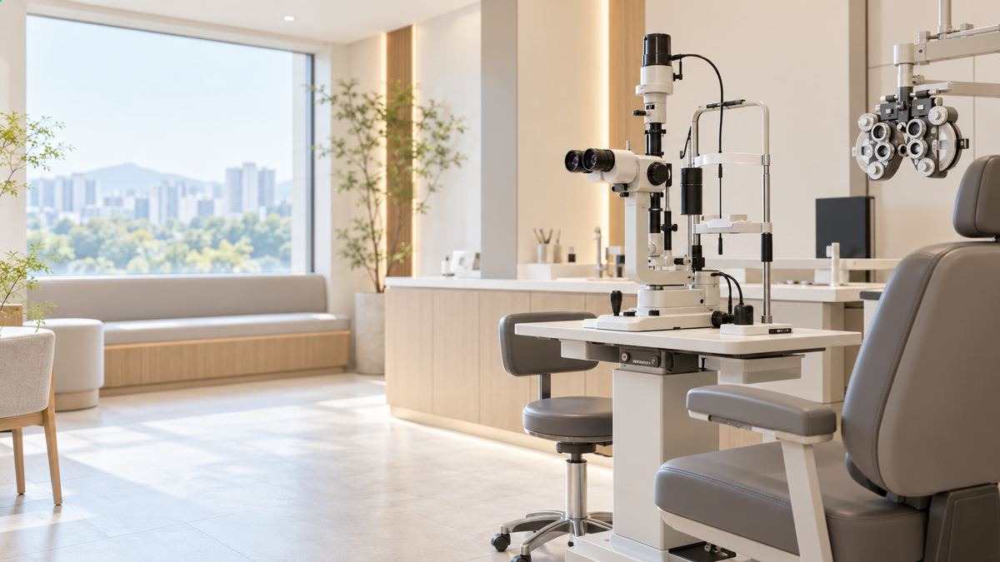
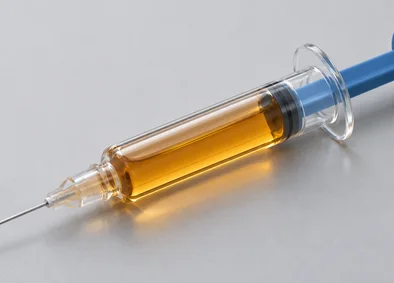
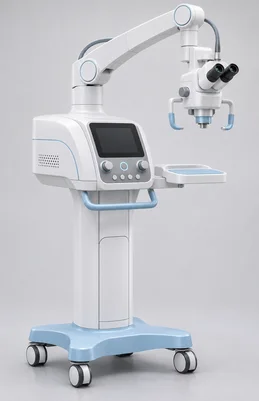
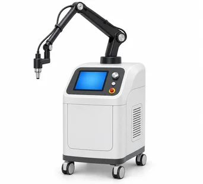

reinforcement of the cornea reinforcement of the cornea reinforcement of the cornea
콜라겐의 결합력을 높여
각막을 단단하게!
각막을 단단하게 하고 수술 뒤 합병증을 막아 주는 간단한 시술
각막강화술이란?
콜라겐 교차 결합CXL, Comeal Collogen Crosslinking을 통해 각막 콜라겐층들의 화학적 결합을 유도하는 수술입니다. 이를 통해 콜라겐의 결속력 향상은 물론 적절한 탄성과 강도도 유지할 수 있습니다.
콜라겐 교차CXL, Comeal Collogen Crosslinking결합을 통해 각막 콜라겐층들의 화학적 결합을 유도하는 수술입니다. 이를 통해 콜라겐의 결속력 향상은 물론 적절한 탄성과 강도도 유지할 수 있습니다.
각막강화술 과정
reinforcement of the cornea process
reinforcement of the cornea PEOCESS
각막강화술 과정
-
1
레이저 조사
수술 방법에 따라 각막 절편을 만들거나 상피를
벗긴 뒤 레이저로 각막 실질층 일부를 깎습니다. -
2
VibeX Xtra 투약
각막 콜라겐 교차결합술 약제를
충분히 넣고 90초 동안 흡수시킵니다. -
3
각막 절편 원상복귀
각막 표면을 정리한 뒤,
라식 수술에서는 앞서 만든 절편을 원래 위치에 놓습니다. -
4
UV-A 조사
각막강화 장비로 UV-A를 90초 동안 쪼입니다.
이때 약제가 UV-A와 만나 활성화되면서
각막 조직의 결합이 단단해집니다.
콜라겐의 결합력을 높여주는
간단 시술
각막강화술
각막강화술이 필요한 이유
-
01
각막 속 콜라겐의 결합력을
높이고 각막 강화 -
02
원추각막처럼 약해진
각막의 증상 완화 효과 -

03라식, 라섹 후
각막의 형태 변화와
시력 퇴행을 억제, 지연
각막강화술을 했을 때
기대효과
-
01
원추 각막 우려를
낮춥니다. -
02
각막의 구조적 안정화,
각막 강성도
유지합니다. -
03
도수 변화가 많은
라섹 수술의 시력 안정화
기간을 앞당깁니다. -
04
각막이 견고해져서
각막확장증 예방 및
근시퇴행의 가능성을
예방합니다.
각막강화술 직후에는 잠깐 각막이 흐려져 뿌옇게 보일 수 있습니다. 일시적인 증상이라 회복되면서 서서히 좋아집니다.
각막강화술의 장점,
추천 대상자Recommend
수술장비
수술장비
리보플라빈
리보플라빈
VibeX Xtra

VIBE X XTRA
수술장비
아베드로
아베드로
KXL

AbedroKXL
수술장비
콜라겐 교차결합 각막강화술
콜라겐 교차결합 각막강화술
CXL

Corneal CollogenCrosslinking